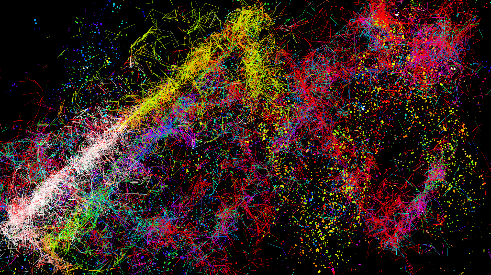
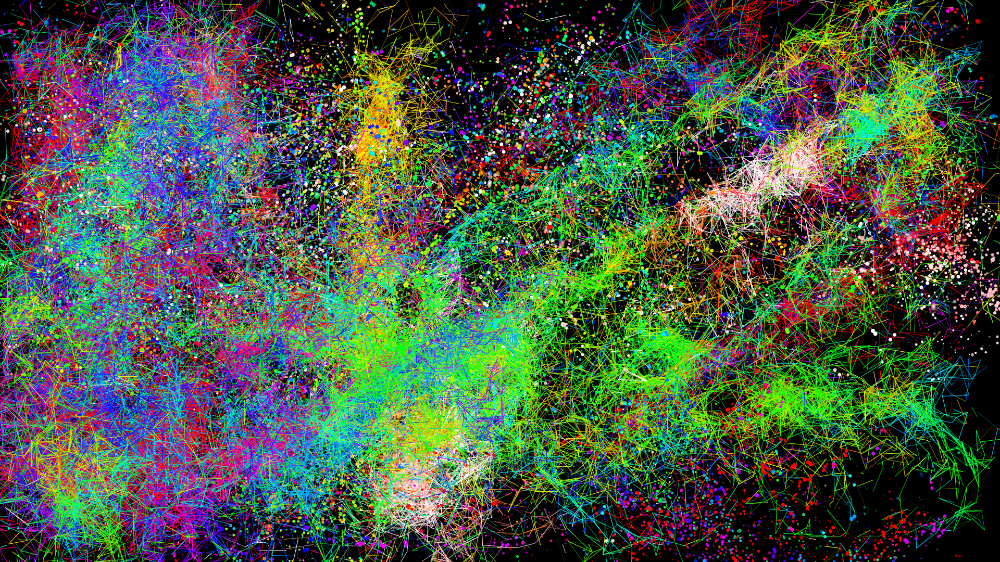

ArtGen
ArtGen is an interactive art generating device linking fidgeting interactions and a physical object made to feel nice to the touch and for visual art to be displayed on a big screen or with a projector to inspire feelings of calmness and to bring a calm and relaxing experience to users.
It was realised by making a box with interactive inputs using soft materials and Arduino and by linking it to a computer with a code generating visuals using Processing.


![The image shows the controller used for ArtGen, with its features labeled. It is a black box with light green decorations around its sensors.
On the top left, the sensor has a green arrow and a label reads: Touch sensor to play or pause the drawing.
On the top right, the sensor has a red X and a label reads: Touch sensor to clear the canvas.
In the middle left, the sensor has three dots and a label reads: Touch sensor to change the drawing mode to dots.
In the middle right, the sensor has two lines and a label reads: Touch sensor to change the drawing mode to lines
At the bottom left, there is a green rectangle and a label reads: Pressure sensor affecting how spread the shapes are drawn.
At the bottom right there is a potentionmeter and a label reads: Potentiometer to manipulate the colour.](../Media/artgenobj.png "ArtGen haptic object")